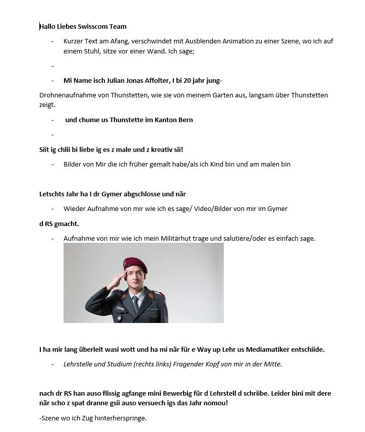
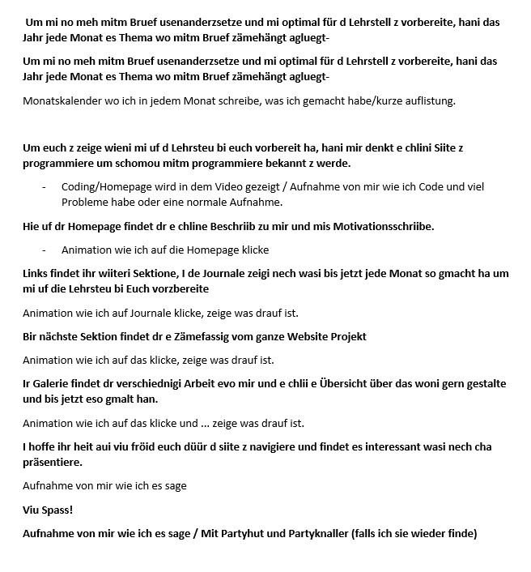
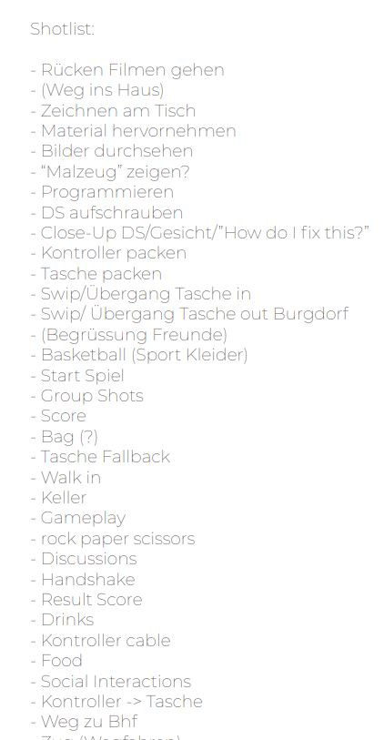
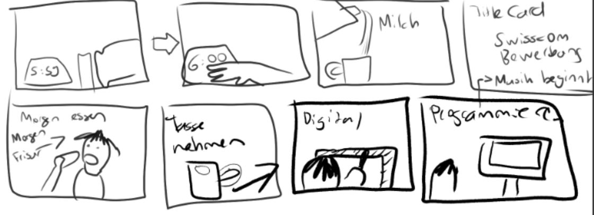

VIDEO DREH
Ein Storyboard erarbeiten
Zuerst wollte ich ein Video für die Homepage erstellen, in welchem ich vor allem die Website erklären würde. Nachdem ich einige Storyboards dafür zeichnete, verwarf ich die Idee jedoch schnell wieder und entschied mich dazu, mich selber im Video vorzustellen. Das Video sollte höchstens zwei Minuten lang sein und gute Übergänge zwischen den Szenen haben.
 
Ich entwarf ein neues Script mit einem kurzen Vorstellungstext. Dieser wurde sehr spontan geschrieben, danach überabeitet, so dass er in einem zwei Minuten Video Platz hat. Nachdem der Text fertig erstellt war, erarbeitete ich ein sehr einfaches Storyboard, mit allen Szenen, die wir für das Video drehen müssten, damit ich ein besseres Gefühl für den Videoaufbau entwickeln konnte. Bald wurde mir klar, dass ich noch andere Leute im Video haben möchte, also holte ich mir die Einwilligung meiner Freunde, beim Dreh mitzumachen. Zusammen mit Mia machte ich einen Termin für einen Filmtag aus und plante, dass wir zuerst bei mir Zuhause, dann beim Basketballplatz in Bern Wankdorf und zuletzt in der WG eines Freundes drehen durften. Der Dreh lief etwa so lang wie geplant und schon bald hatten wir alle benötigten Szenen im Kasten. Einige Szenen beim Basketball waren jedoch etwas verschwommen, doch ich versuchte mein Bestes sie in der Nachbearbeitung schärfer zu machen. Ich konnte die Dinge, die ich während dem Fotografietag gelernt hatte, sehr gut verwenden und machte mir schon im Voraus viel Gedanken über die Komposition und Lichtverhältnisse in den verschiedenen Szenen.
 